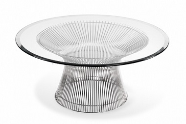

Coffè Table
The Original
Warren Platner’s Coffee Table is an enduring icon of 60’s modernist design. The beautiful sculptural steel wire base resembles a shiny sheaf of wheat. The durable construction has versatile functionality giving it a unique look which will fit into any modern, style-led surrounding. Notable for his extensive use of wire in his designs, the famous and talented Warren Platner is also known for his commercial and residential projects, such as the Georg Jensen Design Centre in New York.
INFURN produces the classic piece with a framework handcrafted from stainless steel wire staffs, which are welded in a line around a ring. The under frame is built with a transparent injection of molded plastic, providing a smooth lower surface. The clear glass plate is 12mm thick.